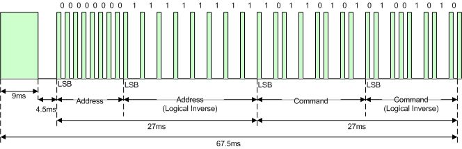

Week of....
May 16th, 2022
Week 2
Adding MGalle Repo to current project repo.
Implement the CAN messaging protocol by properly setting the filters on STM32.
Implement Wiring on STM32, push buttons/LED indicators.
Able to read CAN messages placed on the CAN bus (using Raspberry Pi) and detect up/down request, floor request, door open/close, location of elevator car.
Updated all necessary paperwork (weekly status report, logbooks, gantt chart, etc).
No debrief due to holiday Monday.
Implement the CAN messaging protocol by properly setting the filters on STM32.
Implement Wiring on STM32, push buttons/LED indicators.
Able to read CAN messages placed on the CAN bus (using Raspberry Pi) and detect up/down request, floor request, door open/close, location of elevator car.
Updated all necessary paperwork (weekly status report, logbooks, gantt chart, etc).
No debrief due to holiday Monday.
May 23rd, 2022
Week 3
End of Phase 1.
Reviewed Rubric for Phase I Technical Debrief and ensured all items are completed by beginning of week 4.
Compelted unfinished tasks from week 2.
Debrief 2.
Reviewed Rubric for Phase I Technical Debrief and ensured all items are completed by beginning of week 4.
Compelted unfinished tasks from week 2.
Debrief 2.
May 30th, 2022
Week 4
Beginning of Phase 2.
Documents the detailed design tasks identified in the project plan/gantt chart using appropriate drawings, diagrams, or techniques.
Provides a test plan and evidence to support tasks completed in the Project Plan/Gantt Chart.
Created and added test plan to website.
Logs (on Project Website) the efforts and results of engineering work for reference and accountability. Debrief 3.
Documents the detailed design tasks identified in the project plan/gantt chart using appropriate drawings, diagrams, or techniques.
Provides a test plan and evidence to support tasks completed in the Project Plan/Gantt Chart.
Created and added test plan to website.
Logs (on Project Website) the efforts and results of engineering work for reference and accountability. Debrief 3.
June 06th, 2022
Week 5
Working on implementation of Maintenance Remote - elevator extra.

- Circuit created with STM32 and IR receiver sensor.

- Sensor tested and receiving +3.3V from Nucleo 64.
- Sensor able to read and output remote button push, as seen on oscilloscope picture.

- Code currently not reading and outputting remote button push.
Updated Weekly Status Report and personal logbook
Created debrief pdf doc and submitted to assignment dropbox.
June 13th, 2022
Week 6
Working on implementation of Maintenance Remote - elevator extra.
(IR Remote Bit Example)

- Pin 13 used to read remote signal.
- Data being read from pin 13 and read from the array.
Remote Power Button - Test 1

Remote Power Button - Test 2

- Next steps:
--determine high, low, and midpoint of data being sent.
--shift 1's and 0's into array based on high, lowpoints. Continue until all 32bit data is obtained.
--create switch case corresponding code to the button pushed.
Code: (Remote code highlighted in orange)
Updated personal logbook
Created debrief pdf doc and submitted to assignment dropbox. Remote Code included in document.
June 20th, 2022
Week 7
Completing work of Maintenance Remote Code - elevator extra.
- Determine high, low, and midpoint of data being sent.
- Shift 1's and 0's into array based on high, and low data. Continue until all 32bit data is obtained.
- Create switch case corresponding code to the button pushed.
Remote Power Button Decode Key - Test 1

Decode Keys:
Note: currently only using buttons 1, 2, and 3 in order to correspond to their respective floors.
Code: (Remote code highlighted in orange)
Updated personal logbook
Created debrief pdf doc and submitted to assignment dropbox. Remote Code included in document.
June 27th, 2022
Week 8
Student Success Week
July 4th, 2022
Week 9
Debugging Maintenance Remote Code - elevator extra.
- Determined that the decoding array clears itself for some reason.
- Need to narrow down where exactly.
This Week: -Implementation of remote code with elevator.
Updated personal logbook
Created debrief pdf doc and submitted to assignment dropbox.
May 9th, 2022
Week 1
Downloaded and installed necessary software.
Breifing of ESE Project VI.
Beginning of Phase 1.
Learning and creation of html files/website to keep track of Project VI progress.
Debrief 1.